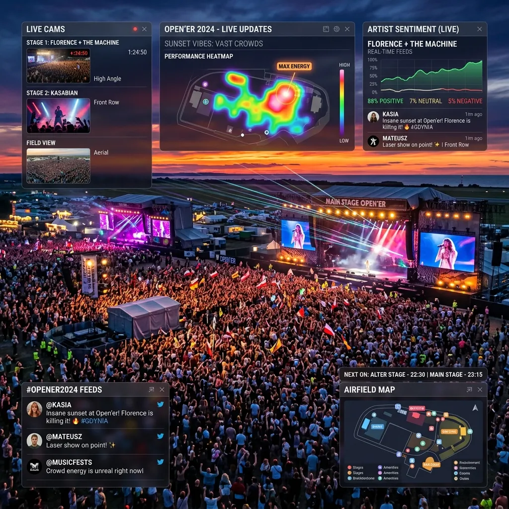

Experiencing Open'er and Pol'and'Rock: The Ultimate Multi-Stream Festival Guide

Amazing Question: If remote festival attendance via multi-angle streaming becomes more immersive than being in the crowd, will physical festivals eventually become secondary to their digital twins?
Poland's summer music festival scene is nothing short of legendary, boasting some of the largest, most vibrant, and culturally significant outdoor musical events in all of Europe. Leading this incredible pack are the globally renowned Open'er Festival in Gdynia and the fiercely independent, famously massive Pol'and'Rock Festival (formerly known as Woodstock Festival Poland). Every single year, these colossal gatherings miraculously transform massive open fields and decommissioned airfields into sprawling, temporary, utopian cities of music, art, and unrestrained freedom. They attract hundreds of thousands of passionate fans from across the entire continent, drawn by world-class line-ups that span every conceivable genre. However, the sheer, unimaginable scale of these events constantly presents a deeply frustrating logistical paradox for the dedicated music lover: With dozens of incredible artists inevitably performing simultaneously across multiple, vastly separated stages, how is it physically possible to experience everything you want to see? The simple answer is that, physically, it isn't. But digitally, a revolution is underway, fundamentally altering how we consume live music.
The Agony of the Festival Schedule Clash
Anyone who has ever meticulously planned a weekend at a major European music festival is deeply, painfully familiar with the dreaded schedule clash. It is that heart-sinking moment when you realize that your favorite indie rock band is headlining the highly atmospheric Tent Stage at the exact same time a legendary, once-in-a-lifetime hip-hop act is taking over the colossal Main Stage, located a massive twenty-minute sprint away through dense, impenetrable crowds. In the physical realm, you are forced to make a brutal, uncompromising choice. You either sacrifice seeing one artist entirely, or you perform the exhausting half-and-half sprint, inevitably resulting in a compromised, stressful experience of both performances. This deeply frustrating reality has always been the single biggest drawback of massive, multi-stage events like Open'er and Pol'and'Rock. But as high-quality, reliable internet infrastructure continues to blanket these vast festival grounds, and as official and unofficial live streaming becomes increasingly ubiquitous, a powerful, digital alternative is rapidly emerging for the modern music aficionado.
Building the Ultimate Digital VIP Experience
Enter the era of immersive, multi-angle remote attendance, powerfully facilitated by advanced platforms specifically designed to handle complex arrays of concurrent video feeds, such as YoutubeMulti. For the hardcore fans unable to secure tickets, or those who simply prefer the acoustic perfection of their own premium home audio setups, the festival experience no longer has to be a solitary, linear broadcast. Instead of relying on a single, heavily curated official livestream that dictates exactly who and what view you watch, you can now construct your own personalized, dynamic, multi-stage festival control room. Imagine dedicating your primary, massive high-definition monitor to the spectacular, pyrotechnic-heavy headliner on the Main Stage, capturing every sweeping crane shot and roaring crowd reaction. Simultaneously, on perfectly arranged secondary screens, you can continuously stream the raw, intimate, up-close performances from the smaller, grittier alternative stages. This setup completely annihilates the tyranny of the schedule clash, allowing you to seamlessly visually bounce between entirely different musical worlds with a simple glance, effectively being in three places at once.
Harnessing the Power of Ground-Level Perspectives
While the official, professionally produced festival broadcasts are undeniably magnificent, offering sweeping drone shots and impeccable soundboard audio mixes, they frequently lack the visceral, chaotic, intensely personal energy of actually being embedded deep within the sweaty, pulsating crowd. This is where the true, transformative magic of a multi-screen setup truly shines brightly. By actively monitoring designated hashtags, location tags, and dedicated festival subreddits alongside the official streams, you can easily surface dozens of high-quality, real-time live streams being broadcast directly from the smartphones of fans standing squarely in the front rows. Integrating these raw, unfiltered, ground-level perspectives directly alongside the polished professional feed using YoutubeMulti creates a viewing experience of unparalleled, breathtaking depth. You are not just simply watching the artist perform; you are actively experiencing the intense, kinetic energy of the mosh pit, the passionate sing-alongs, and the profound, shared emotional resonance of the audience, perfectly bridging the gap between clinical broadcast observation and raw, physical participation.
The Rise of the Hybrid Festival Reality
The profound implications of this sophisticated, multi-stream approach to live music consumption extend far beyond mere convenience. We are rapidly approaching a fascinating inflection point where the digital, remote festival experience, augmented by powerful, customizable multi-viewing tools, genuinely rivals—or in specific logistical aspects, even subtly surpasses—traditional physical attendance. You eliminate the exhausting queues, the predictably terrible weather, the obstructed views, and the physically limiting schedule conflicts. Instead, you gain absolute, dictatorial control over your personal auditory and visual environment, curating a bespoke, perfect festival flawlessly tailored to your exact, uncompromising specifications. As the legendary status of Polish festivals like Open'er and Pol'and'Rock continues to naturally expand their massive global footprint, empowering international audiences to experience their unique, intoxicating magic simultaneously across multiple digital dimensions will become an absolutely crucial component of their enduring legacy. Embracing tools like YoutubeMulti is not simply a cool technical trick; it is fundamentally the next logical, inevitable evolutionary step in how humanity collectively experiences and profoundly interacts with monumental live music events.